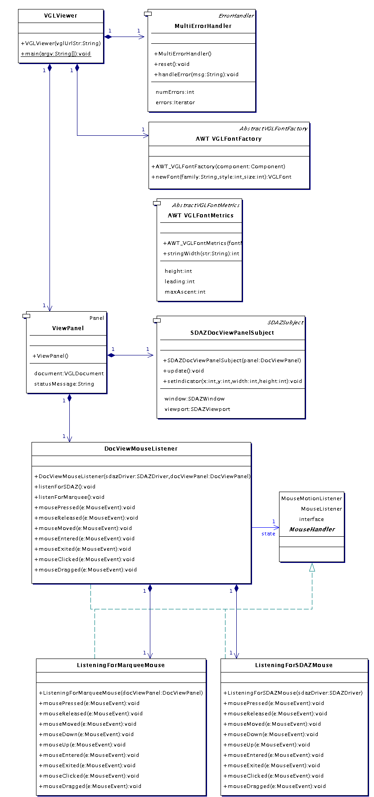
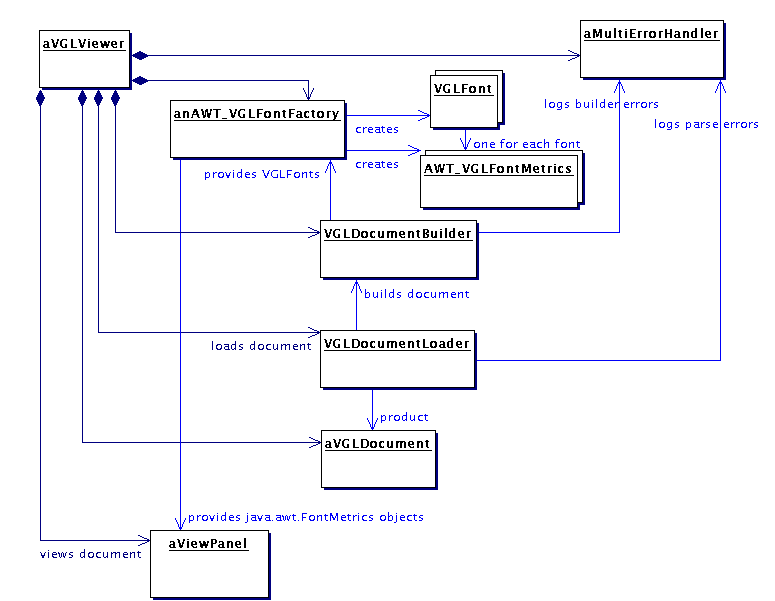
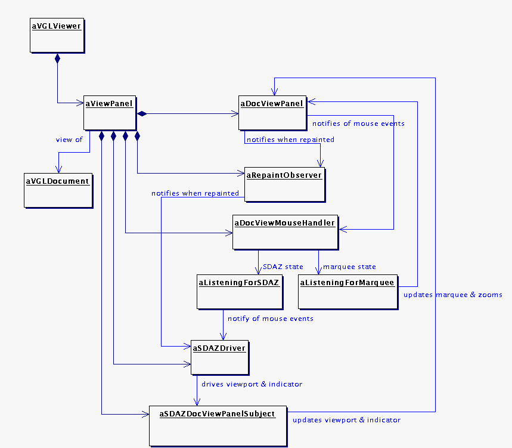
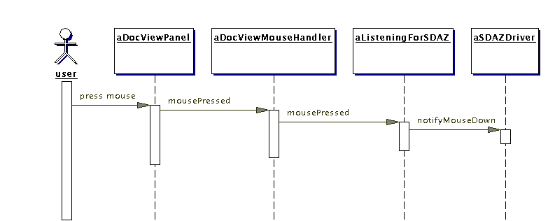
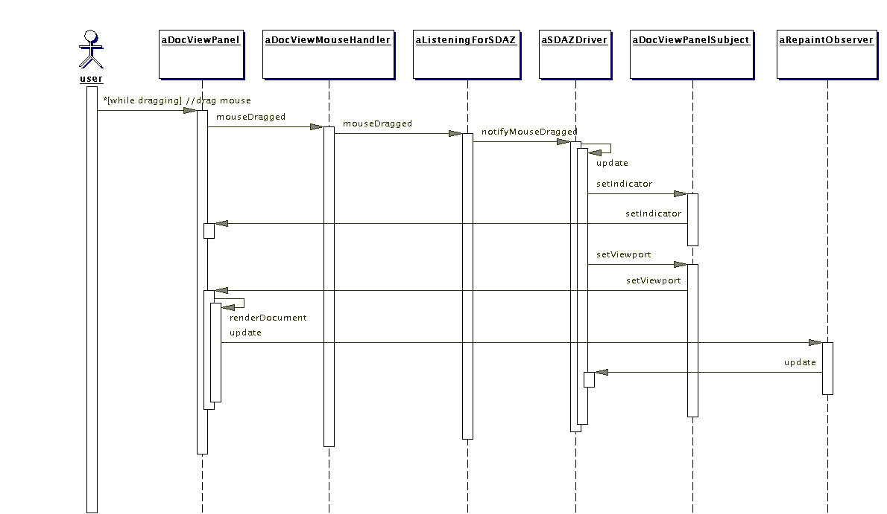
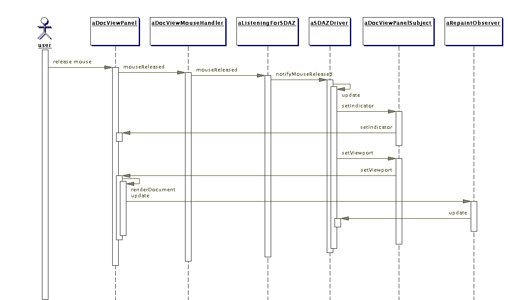
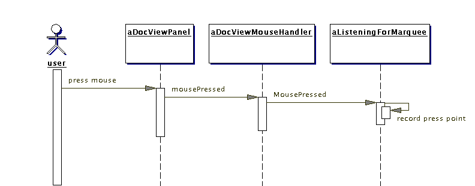
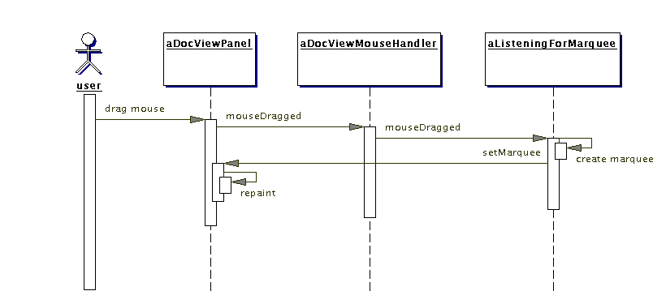
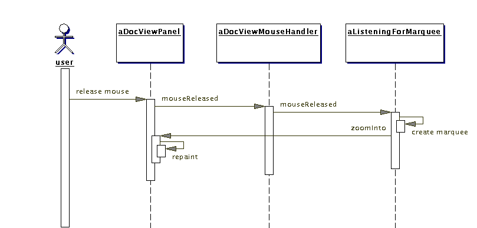

VGLViewer

Implementation
vglViewer |
Introduction|
Package vglViewer glues together all the other packages that you have read about to form the VGLViewer application. This package documentation starts with an overview of the class architecture, then focuses on (1) how VGLViewer loads a VGL document model then (2) how VGLViewer views the model and handles user interaction.
|
Class Architecture|
The following implementation-level class diagram shows the classes which implement this package vglViewer. These are explained in detail below, but briefly, these are:
|
- VGLViewer implements the VGLViewer application and contains a ViewPanel,
- ViewPanel contains a control panel of buttons, along with a DocViewPanel to render a VGLDocument,
- DocViewMouseHandler handles mouse events that occur on the DocViewPanel, in the context of SDAZ or the usual drag-the-marquee style zooming,
- AWT_VGLFontFactory is used by VGLViewer to generate VGLFonts with AWT-specific AWT_VGLFontMetrics when loading a VGLDocument from VGL XML,
- MultiErrorHandler logs any errors that occur when VGLViewer loads a VGLDocument, and
- SDAZDocViewPanelSubject adapts a DocViewPanel to the SDAZSubject interface so that it can be zoomed by a SDAZDriver.
|

Figure 14. vglViewer Classes
Document Loading|
When initialised or started, VGLViewer loads a VGLDocument from a VGL XML source and displays it in its ViewPanel. The instance diagram below shows the class instances which participate in loading. Objects composing the ViewPanel are omitted.
|

Figure 15. Objects involved in loading a VGL document, with a ViewPanel, which views the document
|
Loading is done by VGLViewers private loadVGL method, which is called on instantiation:
|
private void loadVGL(String url) throws Exception {
errorHandler.reset();
Logger logger = new Logger() {
public void log(String msg) {
// System.out.println(msg);
}
};
AWT_VGLFontFactory fontFactory = new AWT_VGLFontFactory(viewPanel);
VGLDocumentBuilder builder = new VGLDocumentBuilder(errorHandler, fontFactory);
builder.setLogger(logger);
VGLDocumentLoader loader = new VGLDocumentLoader(builder);
loader.setErrorHandler(errorHandler);
VGLDocument doc = loader.load(url);
if (errorHandler.getNumErrors() > 0) {
reportErrors(url);
}
else {
viewPanel.setDocument(doc);
}
}
|
|
Let's pick over this code fragment, while considering the instance diagram above. VGLViewer has a MultiErrorHandler, which decorates the vglDocument.utils.ErrorHandler to log multiple errors so that they can be got as a list. VGLViewer starts by resetting the handler, just to be safe.
|
|
After creating a Logger and an AWT_VGLFontFactory (explained in the next section), VGLViewer creates a VGLDocumentBuilder. The VGLDocumentBuilder will record illegal build directions with the MultiErrorHandler, log progress with the Logger (only when debugging), and generate VGLFonts for document elements with the AWT_VGLFontFactory. Note that the builder recovers an illegal direction, so is able to accumulate lots of error messages.
|
|
Now that it has a document builder, VGLViewer makes itself a VGLDocumentLoader, which will parse a VGL XML source and drive the builder to construct the document. VGLViewer gives the MultiErrorHandler to the VGLDocumentLoader also, so that it can record XML syntax errors.
|
|
With everything in place, the loader is directed to load the VGL XML. After loading, if the MultiErrorHandler has no errors, the freshly loaded VGLDocument is given to the ViewPanel, which then renders it. If the MultiErrorHandler does have errors, they are reported to the user via a call to reportErrors, which packages them up as a newline-delimited string and gives them to the ViewPanel to report as a status message.
|
AWT_VGLFontFactory and AWT_VGLFontMetrics|
Recall that the design of the VGL document model implemented by package vglDocument is independent of any particular window manager, eg. AWT, Swing or SWT. Because font metrics may vary among window managers, vglDocument therefore leaves it up to this package to implement (1) AbstractVGLFontFactory to create VGLFonts, and (2) AbstractVGLFontMetrics to associate an instance of with each VGLFont to hold its metrics.
|
|
As shown in the instance diagram above, the AWT_VGLFontFactory is associated with the ViewPanel (upcasted to type java.awt.Component) on instantiation. Here is the factory method of AWT_VGLFontFactory, where the ViewPanel is referenced by myAWTComponent:
|
public VGLFont newFont(String family, int style, int size) {
Font awtFont = new Font(family, style, size);
FontMetrics awtFontMetrics = myAWTComponent.getFontMetrics(awtFont);
AbstractVGLFontMetrics metrics = new AWT_VGLFontMetrics(awtFontMetrics);
VGLFont vglFont = new VGLFont(metrics, family, style, size);
return vglFont;
}
|
|
The factory method first creates an AWT font, for which it then gets a java.awt.FontMetrics from the ViewPanel. The factory method then creates an AWT_VGLFontMetrics which wraps the java.awt.FontMetrics. It then creates the VGLFont, gives it the AWT_VGLFontMetrics, then returns it. When the AWT_VGLFontMetrics is asked for, say, the width of a string, it delegates the job to its wrapped java.awt.FontMetrics.
|
Handling User Interaction|
Now let's take a look at what VGLViewer does to handle user interaction with the document view. Consider the instance diagram below, which focuses on ViewPanel and all of its aggregated objects.
|

Figure 16. Objects involved in handling user interaction with the document view
|
The DocViewPanel shows a view of the VGLDocument, and provides setters to set a viewport, window and SDAZ indicator glyph.
|
|
The RepaintObserver notifies the SDAZDriver whenever the DocViewPanel has painted a new view of the VGLDocument.
|
|
The DocViewMouseHandler gets mouse events fired by the DocViewPanel. A DocViewMouseHandler has two states: one in which it is responding to mouse events as the user is controlling SDAZ, the other when the user is dragging a marquee defining a region to zoom into. MouseHandler lumps interfaces java.awt.MouseMotionListener and java.awt.MouseListener, to lump them together into an abstract state class. MouseHandler is implimented by DocViewMouseHandler and it's two concrete state classes, ListeningForSDAZMouse and ListeningForMarqueeMouse. DocViewMouseHandler creates an instance of each of these two classes and maintains a reference to one of them at any given time to represent its current state. DocViewMouseHandler delegates all events it gets to the reference. DocViewMouseHandler is switched between the two states (by its ViewPanel in response to control button clicks by a user) with calls to methods listenForSDAZ and listenForMarquee.
|
|
When a DocViewMouseHandler is created by its ViewPanel, it is given a SDAZDriver and the DocViewPanel. The SDAZDriver is associated with the ListeningForSDAZMouse, which notifies it of mouse events it receives, while the ListeningForMarqueeMouse is associated with the DocViewPanel, to direct it draw a marquee when mouse is dragged and zoom into the marquee when the mouse is released.
|
|
When in 'SDAZ state', DocViewMouseHandler delegates the events to its ListeningForSDAZ, which in turn notifies the SDAZDriver. In 'marquee-dragging state', DocViewMouseHandler handles a drag mouse events by directing DocViewPanel to draw a marque showing the extents of the drag, and handles a mouse up event by directing DocViewPanel to zoom into the area bounded by the marquee.
|
|
When SDAZDriver gets a mouse event, it directs the SDAZDocViewPanelSubject to modify its viewport and SDAZ indicator. SDAZDocViewSubject passes these directions on to the DocViewPanel. After updating its viewport and SDAZ indicator, DocViewPanel schedules a repaint. As mentioned above, DocViewPanel will then notify its
|
Object Collaborations for SDAZ|
The sequence diagrams below shows colaborations between the objects aggregated by ViewPanel while a user presses the mouse down, drags, then releases, while VGLViewer is in SDAZ mode.
|
|
On receiving a mouse press, the DocViewPanel notifies the DocViewMouseHandler, which in turn notifies the SDAZDriver, which changes state from Dormant to Dragging. The SDAZDriver is now ready to respond to mouse drags.
|

Figure 17. Mouse Pressed in SDAZ Mode
|
When the mouse is then dragged, a loop begins, in which the document view scrolls while zoomed outward. The DocViewPanel notifies the DocViewMouseHandler, which in turn notifies the SDAZDriver, which (via the DocViewPanelSubject) gives a new SDAZ indicator setting and viewport to DocViewPanel. DocViewPanel then schedules a repaint. When painted, the DocViewPanel notifies the RepaintObserver, which in turn updates the SDAZDriver, which again computes a new SDAZ indicator and viewport for the DocViewPanel, which repaints, and so on.
|

Figure 18. Mouse Dragged in SDAZ MODE
|
The loop continues until the user stops dragging by releasing the mouse. At that point another loop begins, in which the document view returns to the original zoom level.
|
|
The DocViewPanel notifies the DocViewMouseListener, which notifies the SDAZDriver, which transitions to its Restoring state. The SDAZDriver then assigns a new viewport and SDAZ indicator for the DocViewPanel (via the DocViewPanelSubject), which then schedules a repaint. When repainted, the DocViewPanel notifies the RepaintObserver, which updates the the SDAZDriver. If the view has not yet returned to the original zoom level, the SDAZDriver continues in its Restoring state and computes the next viewport and SDAZ indicator for the DocViewPanel. This loop continues until the viewport is the same size as that which the SDAZDriver had in its Dormant state, at which point the SDAZDriver stops assigning new viewports and indicator settings and transitions back to its Dormant state.
|

Figure 19. Mouse Released in SDAZ Mode
Object Collaborations for Marquee Zoom|
The sequence diagrams below shows the collaborations between the objects aggregated by ViewPanel while a user presses the mouse down, drags, then releases, while VGLViewer is in Marquee Zoom mode.
|
|
On receiving a mouse press, the DocViewPanel notifies the DocViewMouseHandler, which records the position of the mouse.
|

Figure 20. Mouse Pressed in Marquee Zoom Mode
|
On receiving a mouse drag, the DocViewPanel notifies the DocViewMouseHandler, which sets a new marquee for the DocViewPanel to display. The marquee will enclose the mouse down position and its current drag position. The DocViewPanel then schedules a repaint of itself.
|

Figure 21. Mouse Dragged in Marquee Zoom Mode
|
On receiving a mouse release, the DocViewPanel notifies the DocViewMouseHandler, which sets a new marquee for the DocViewPanel to zoom into. The marquee will enclose the mouse down position and its current release position. The DocViewPanel then schedules a repaint of itself.
|

Figure 22. Mouse Released in Marquee Zoom Mode
|